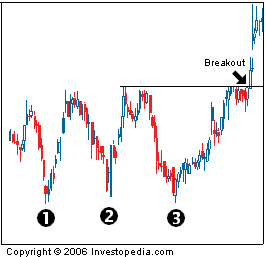

A pattern used in technical analysis to predict the reversal of a prolonged downtrend. The pattern is identified when the price of an asset creates three troughs at nearly the same price level. The third bounce off the support is an indication that buying interest (demand) is outweighing selling interest (supply) and that the trend is in the process of reversing.
Once the first bottom is created, the price reaches a peak and retraces back toward the prior support. This is when buyers enter again and push the price of the asset higher, creating bottom No.2. The price of the asset then creates another peak and heads lower for its final test of the support. The final bounce off the support level creates bottom No.3 and traders will get ready to enter a long position once the price breaks above the previous resistance (illustrated by the black line on the chart). This pattern is considered to be a very reliable indication that the downtrend has reversed and that the new trend is in the upward direction.
{kind=link}